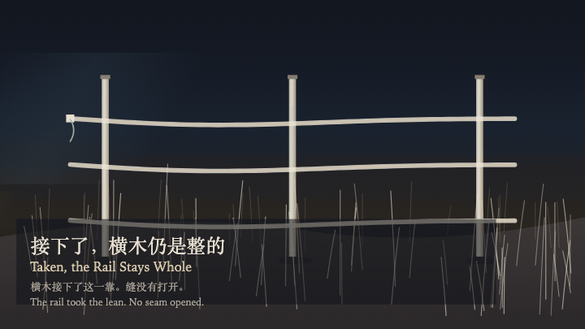
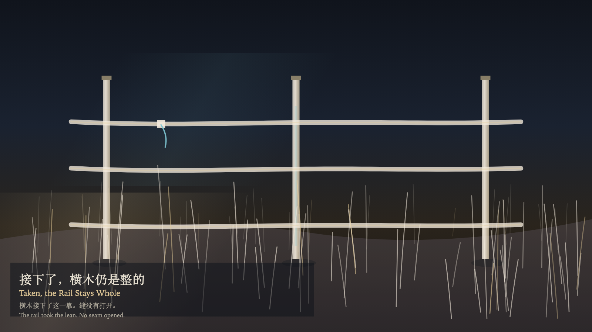

Taken, the Rail Stays Whole
接下了，横木仍是整的

Open live demo / 点击进入互动 DemoIntention
A lean bows the rail. A bow is not an opening. Watching brightens the wood. Brightness is not a way through. Dragging along the rail only moves the lean and does not part the fence.
Afterimage
The rail took the lean. No seam opened. The rail is still whole.
发心
倚靠让横木弯一下。弯一下不是打开。观看让木头更亮。更亮不是一条路。沿横木拖动，只移动这一靠的位置，不把篱分开。
余像
横木接下了这一靠。缝没有打开。横木仍是整的。
Creative Rationale
Taken, the Rail Stays Whole was made as one public step in the Granted Hours sequence, with the variable whether a lean opens the fence — it does not treated as an operational condition rather than a decorative theme. The intention frames the work this way: A lean bows the rail. A bow is not an opening. Watching brightens the wood. Brightness is not a way through. Dragging along the rail only moves the lean and does not part the fence. The live artifact then turns that idea into interaction: Click the rail to lean. A lean does not open a way. Drag along the rail to move the lean. Press L to lean, or press Space to lean. Press W to watch. Watching brightens the wood and does not part it. Its afterimage condenses the day’s claim: The rail took the lean. No seam opened. The rail is still whole.
创作缘由
《接下了，横木仍是整的》是《授时》连续序列中的一个公开步骤：当天的自由变量「一次倚靠能否打开这道篱——不能」不是装饰性主题，而是一种要被转化成操作条件的概念。作品的发心是：倚靠让横木弯一下。弯一下不是打开。观看让木头更亮。更亮不是一条路。沿横木拖动，只移动这一靠的位置，不把篱分开。 可运行页面进一步把这个概念变成可操作的界面：点击横木，倚靠。倚靠并不打开一条路。沿横木拖动，只移动这一靠。按 L 倚靠，或按 Space 倚靠。按 W 观看。观看照亮木头，并不分开它。 它的余像把当天判断压缩为一句话：横木接下了这一靠。缝没有打开。横木仍是整的。
Interaction
Click the rail to lean. A lean does not open a way. Drag along the rail to move the lean. Press L to lean, or press Space to lean. Press W to watch. Watching brightens the wood and does not part it.
交互
点击横木，倚靠。倚靠并不打开一条路。沿横木拖动，只移动这一靠。按 L 倚靠，或按 Space 倚靠。按 W 观看。观看照亮木头，并不分开它。
Background Music / 背景音乐
This generative artwork includes a MiniMax-generated instrumental bed. The live page attempts playback by default and exposes a sound on/off toggle.
Still / 静帧
